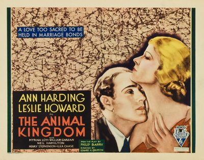

The Animal Kingdom
Starring: Leslie Howard, Ann Harding, Myrna Loy
Director: Edward H. Griffith, George Cukor
Writer: Edward H. Griffith, Horace Jackson, Philip Barry
Producer: David O. Selznick
The Animal Kingdom (also known as The Woman in His House in the UK) is a 1932 American pre-Code comedy-drama film directed by Edward H. Griffith based upon a comedy of manners play of the same name by Philip Barry. The film stars Leslie Howard, Ann Harding, Myrna Loy, William Gargan, Ilka Chase, and Neil Hamilton. Howard, Gargan, and Chase also starred in the play when it opened on Broadway on January 12, 1932.
Watch Online: Internet Archive
Trivia
- The film is based on a 1932 play by Philip Barry of the same name set in 1930s New York and Connecticut.
- The film deviates from the play in two areas: the play emphasizes the estrangement between Tom and his father, who has never visited his son's house before; and Owen, his one "respectable gentleman" friend, introduced Cecelia to Tom.
- In an ironic twist, when filming of Smilin' Through did not finish on time and MGM refused to release Leslie Howard to RKO to begin filming The Animal Kingdom at the scheduled time, RKO realized Ann Harding would now be available and reassigned her to the role.
Previous Showings
4 Runs • 1 Festival
Original Billings: 1 run (January 1, 1933)
Original Run: January 1, 1933 (Sunday - Tuesday)
All runs on record (4):
- January 1, 1933 (Sunday - Tuesday)Ann Harding, Leslie Howard
- October 22 - 23, 1990w/ The Royal Family of Broadway
- October 29 - 30, 1992w/ What Price Hollywood?
- December 9 - 10, 1998Romantic Comedy Seriesw/ Private Lives